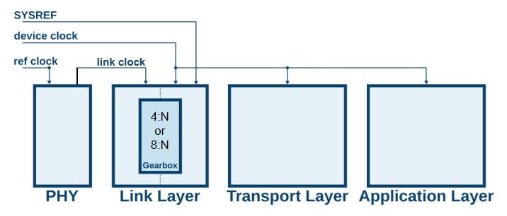

FPGA Clocking
JESD204 is a protocol that is made up of layers to manage the different aspects of the data link between the converters and FPGA. On the converter side this is handled for you by the ASIC designer but the FPGA side requires a lot more work. This is heavily managed by the ADI JESD204 Framework, but it still needs to be specifically configured and laid out correctly for a specific use case or set of use cases.

From the diagram above, we can see in the FPGA there are explicit cores within the FPGA to manager the PHY Layer, Link Layer, and Transport Layer aspects for the JESD204 protocol. These will have specific drivers and HDL IP that need to configured for a configuration. By configuration, it primarily refers to the clocking and JESD modes. In the diagram there are both TX and RX data paths but generically they can be considered identical, data will just flow in a specific direction in each case.
Clocking Layout
Focusing on an individual chain, we can consider the diagram below where the individual clocks are detailed. These clocks can be provided externally or internally but must meet some basic requirements. Traditionally they will come from an external clocking devices, which can drastically save power and resources, and adijif takes this approach.

The clocks will have the following constraints:
ref clock: This clock’s primary purpose is to drive the SERDES which will typically happen by feeding the CPLL or QPLL inside the transceiver primitives of the FPGA. Therefore, it’s frequency is determined base on the PLL dividers and range limitations. The constraint here is that the ref clock times the PLL multiply/divide ratio must meet the lane rate of the desired link, which is fixed.
link clock: This clock must be lane rate /40 (204B) or lane rate /66 (204C). It most cases the ref clock and the link clock will be the same value, or the ref clock is just selected to be equal to the link clock from the start for simplicity. However, this is not always possible. Therefore, the FPGA PLL clock dividers and muxes can be used to correctly meet this requirement from an upstream clock. These dividers and muxed are detailed in the diagram below, where RXOUTCLK is itself used to drive the link layer.
device clock: This clock is unique since it must be derived from the same source as SYSREF, since it is used to sample SYSREF and be a multiple of the sample clock. The device clock determines the output rate of the link layer, and when this rate is different than the link clock it will enable the Gearbox inside the link layer HDL core. This will occur usually when N’ is not 8 or 16, or when F != 1, 2, or 4. It is also important to select this clock with respect to desired data rate constraints for downstream logic since this is the rate application logic must consume data at. This clock will be at the sample clock / SPC where SPC is some integer. However, this rate should not exceed the Fmax of the FPGA logic. SPC is specific to the JESD204 mode and is calculated like so:
JESD204B: SPC = (32 * L) / (M * N’)
JESD204C: SPC = (64 * L) / (M * N’)
SYSREF: This clock is simple the system reference and will be lane rate / M where M is a power of 2 and should be large.
Technically, only the device clock is needed by the FPGA and all other clocks (except for SYSREF) could be derived from it. This assumes the necessary ratios are possible by the internal dividers. However, in most cases SYSREF is used for deterministic latency.
Search Strategy
There are two main unique cases when selecting the ref clock and device clock:
N’ is not 8 or 16, or when F != 1, 2, or 4
Otherwise
In case (1) the ref clock is unlikely to be derived from the device clock. Therefore, two separate clocks need to be provided to the FPGA. Otherwise, only a single clock (ignoring SYSREF) is required. This is the general behavior based on current analysis; however, this is not a hard definition. The internal solver is configured to favor ref clock and device clock to be the same value. When this is not possible it will automatically create a secondary clock from the clock chip to be specifically used as the device clock. The generation of a separate clock for device clock can be forced by setting force_separate_device_clock in the fpga object instantiated in the system object.
API Controls
To manage the generation of these clocks, APIs are provided in the FPGA specific classes (adijif.fpga.xilinx). These are:
out_clk_select: Control {RX/TX}CLKSEL mux. Options are XCVR_REFCLK, XCVR_REFCLK_DIV2, XCVR_PROGDIV_CLK
force_cpll: Force use of CPLL
force_qpll: Force use of QPLL
force_qpll1: Force use of QPLL1 (only available on GTH and GTY transceivers)
device_clock_source: Control the source of the device clock. This would be:
external: Get clock from external clock chip
link_clock: Use link clock which is derived from the PHY layer
ref_clock: Use ref clock which drives the PHY layer
By default adijif will try to determine valid PLL settings and necessary muxing settings to meet the link clock and ref clock requirements. The device clock source can also be automatically be determined by the solver.
Below is an example of an explicit request for a separate device clock and since out_clk_select is set to XCVR_REFCLK it will force the ref clock to be equal to the link clock.
import adijif
import pprint
vcxo = 125e6
sys = adijif.system("ad9680", "ad9523_1", "xilinx", vcxo)
sys.Debug_Solver = False
sys.fpga.setup_by_dev_kit_name("zcu102")
sys.fpga.force_cpll = True
sys.fpga.out_clk_select = "XCVR_REFCLK" # force reference to be core clock rate
sys.converter.use_direct_clocking = True
sys.converter.set_quick_configuration_mode(0x88)
assert sys.converter.S == 1
# Limit upper dividers to powers of 2
sys.clock.d = [int(2 ** i) for i in range(8)]
# Current configuration
sys.converter.sample_clock = 1e9 / 2
cfg = sys.solve()
pprint.pprint(cfg)
{'clock': {'m1': 3,
'n2': 24,
'out_dividers': [2, 64, 8, 8],
'output_clocks': {'AD9680_ref_clk': {'divider': 2,
'rate': 500000000.0},
'AD9680_sysref': {'divider': 64,
'rate': 15625000.0},
'zcu102_AD9680_device_clk': {'divider': 8,
'rate': 125000000.0},
'zcu102_AD9680_ref_clk': {'divider': 8,
'rate': 125000000.0}},
'part': 'AD9523-1',
'r2': 1,
'vco': 1000000000.0,
'vcxo': 125000000.0},
'converter': [],
'converter_AD9680': {'clocking_option': 'direct', 'decimation': 1},
'fpga_AD9680': {'d': 1,
'device_clock_source': 'external',
'm': 1,
'n1': 4,
'n2': 5,
'out_clk_select': 'XCVR_REFCLK',
'sys_clk_select': 'XCVR_CPLL',
'transport_samples_per_clock': 4.0,
'type': 'cpll',
'vco': 2500000000.0},
'jesd_AD9680': {'CS': 0,
'F': 1,
'HD': 1,
'K': 32,
'L': 4,
'M': 2,
'Np': 16,
'S': 1,
'bit_clock': 5000000000.0,
'converter_clock': 500000000.0,
'jesd_class': 'jesd204b',
'jesd_mode': '136',
'multiframe_clock': 15625000.0,
'sample_clock': 500000000.0}}
In the output the lines specific to the link layer and mux configuration have are noteed by fields out_clk_select and sys_clk_select.
Per Part Configuration
By default individual FPGA properties will be applies to all signal chains. However, if a specific only wants to be applied to the ADC or DAC side, or ADC1 but not ADC2, this configuration is possible. This is done through dictionary parameterization as following:
sys = adijif.system(["ad9680", "ad9144"], "ad9523_1", "xilinx", 125e6)
sys.fpga.setup_by_dev_kit_name("zcu102")
sys.fpga.force_cpll = True
sys.fpga.out_clk_select = {
sys.converter[0]: "XCVR_REFCLK",
sys.converter[1]: "XCVR_REFCLK_DIV2",
}
sys.fpga.requires_separate_link_layer_out_clock = {
sys.converter[0]: True,
sys.converter[1]: False,
}
...
Separate SYSREF Sources
With the introduction of ADF4030, it is possible to split the source of SYSREF and ref clock. Internally this is a similar concept to external PLL usage for converter clock references that directly drive the converter. The SYSREF source can be modified by using the add_pll_sysref method on the system object. This will automatically add the SYSREF source to the converter and connected FPGA models. This method supports both converters and nested converter (like AD9081) models. After a solution is found the output configuration will have a new field that references the new SYSREF source. An example of this is shown below:
import pprint
import adijif
vcxo = 100e6
cddc = 6
fddc = 4
sys = adijif.system("ad9081", "hmc7044", "xilinx", vcxo, solver="CPLEX")
sys.fpga.setup_by_dev_kit_name("zcu102")
sys.fpga.ref_clock_constraint = "Unconstrained"
sys.fpga.sys_clk_select = "XCVR_QPLL0" # Use faster QPLL
sys.fpga.out_clk_select = "XCVR_PROGDIV_CLK" # force reference to be core clock rate
sys.converter.adc.sample_clock = 2900000000 / (cddc * fddc)
sys.converter.dac.sample_clock = 5800000000 / (4 * 12)
sys.converter.adc.datapath.cddc_decimations = [cddc] * 4
sys.converter.adc.datapath.fddc_decimations = [fddc] * 8
sys.converter.adc.datapath.fddc_enabled = [True] * 8
sys.converter.dac.datapath.cduc_interpolation = cddc
sys.converter.dac.datapath.fduc_interpolation = fddc
sys.converter.dac.datapath.fduc_enabled = [True] * 8
assert sys.converter.dac.interpolation == cddc * fddc
# Add ADF4030 as SYSREF source for ADC and DAC
sys.add_pll_sysref("adf4030", vcxo, sys.converter, sys.fpga)
mode_tx = "0"
mode_rx = "1.0"
sys.converter.dac.set_quick_configuration_mode(mode_tx, "jesd204c")
sys.converter.adc.set_quick_configuration_mode(mode_rx, "jesd204c")
print(f"{sys.converter.adc.bit_clock=}")
print(f"{sys.converter.dac.bit_clock=}")
cfg = sys.solve()
pprint.pprint(cfg)
print(f"\n{sys.converter.dac.converter_clock=}")
sys.converter.adc.bit_clock=11962500000.0
sys.converter.dac.bit_clock=11962500000.0
Continued
Continued
{'clock': {'n2': 29,
'out_dividers': [5, 8, 24, 8, 24],
'output_clocks': {'AD9081_ref_clk': {'divider': 5,
'rate': 580000000.0},
'zcu102_adc_device_clk': {'divider': 24,
'rate': 120833333.33333333},
'zcu102_adc_ref_clk': {'divider': 8,
'rate': 362500000.0},
'zcu102_dac_device_clk': {'divider': 24,
'rate': 120833333.33333333},
'zcu102_dac_ref_clk': {'divider': 8,
'rate': 362500000.0}},
'r2': 1,
'vco': 2900000000.0,
'vcxo': 100000000.0,
'vcxo_doubler': 1},
'clock_ext_pll_sysref_adf4030': {'n': 145,
'out_dividers': [1280, 1280],
'output_clocks': {'adc_sysref': {'divider': 1280,
'rate': 1888020.8333333333},
'dac_sysref': {'divider': 1280,
'rate': 1888020.8333333333}},
'r': 6,
'vco': 2416666666.6666665},
'converter': {'clocking_option': 'integrated_pll',
'pll_config': {'d': 3,
'm_vco': 5,
'n_vco': 3,
'r': 1,
'serdes_pll_div': 1}},
'datapath_adc': {'cddc': {'decimations': [6, 6, 6, 6],
'enabled': [True, True, True, True],
'nco_frequencies': [0, 0, 0, 0],
'nco_phases': [0, 0, 0, 0]},
'fddc': {'decimations': [4, 4, 4, 4, 4, 4, 4, 4],
'enabled': [True,
True,
True,
True,
True,
True,
True,
True],
'nco_frequencies': [0, 0, 0, 0, 0, 0, 0, 0],
'nco_phases': [0, 0, 0, 0, 0, 0, 0, 0],
'source': [1, 1, 2, 2, 3, 3, 4, 4]}},
'datapath_dac': {'cduc': {'enabled': [True, True, True, True],
'interpolation': 6,
'nco_frequencies': [0, 0, 0, 0],
'nco_phases': [0, 0, 0, 0],
'sources': [[1], [1], [3], [3]]},
'fduc': {'enabled': [True,
True,
True,
True,
True,
True,
True,
True],
'interpolation': 4,
'nco_frequencies': [0, 0, 0, 0, 0, 0, 0, 0],
'nco_phases': [0, 0, 0, 0, 0, 0, 0, 0]}},
'fpga_adc': {'clkout_rate': 1,
'd': 2,
'device_clock_source': 'external',
'm': 1,
'n': 33,
'n_dot_frac': 33,
'out_clk_select': 'XCVR_PROGDIV_CLK',
'progdiv': 66,
'sys_clk_select': 'XCVR_QPLL1',
'transport_samples_per_clock': 1.0,
'type': 'qpll1',
'vco': 11962500000},
'fpga_dac': {'clkout_rate': 1,
'd': 2,
'device_clock_source': 'external',
'm': 1,
'n': 33,
'n_dot_frac': 33,
'out_clk_select': 'XCVR_PROGDIV_CLK',
'progdiv': 66,
'sys_clk_select': 'XCVR_QPLL0',
'transport_samples_per_clock': 1.0,
'type': 'qpll',
'vco': 11962500000},
'jesd_adc': {'CS': 0,
'F': 12,
'HD': 0,
'K': 64,
'L': 1,
'M': 8,
'Np': 12,
'S': 1,
'bit_clock': 11962500000.0,
'converter_clock': 2900000000.0,
'jesd_class': 'jesd204c',
'jesd_mode': '1.0',
'multiframe_clock': 1888020.8333333333,
'sample_clock': 120833333.33333333},
'jesd_dac': {'CS': 0,
'F': 12,
'HD': 0,
'K': 64,
'L': 1,
'M': 8,
'Np': 12,
'S': 1,
'bit_clock': 11962500000.0,
'converter_clock': 2900000000.0,
'jesd_class': 'jesd204c',
'jesd_mode': '0',
'multiframe_clock': 1888020.8333333333,
'sample_clock': 120833333.33333333}}
sys.converter.dac.converter_clock=2900000000.0
Device Clock Source
The main variation in the clock architecture is the source of the device clock. This can change due to availability of external clocks, subclass 1 requirements, and simplicity of the design. The device clock can be derived from the ref clock, link clock, or an external clock source. The default behavior is to use the external source as the device clock because it arguable provides the most flexibility and simplified in FPGA clock generation. However, this can be changed by setting the device_clock_source property in the FPGA object.
Topologically the different configurations look like this:
{kind=link}
{kind=link}
{kind=link}
FPGA configuration with reference clock sourced device clock